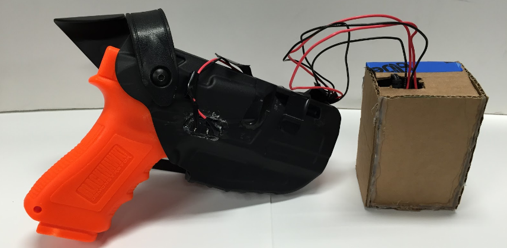
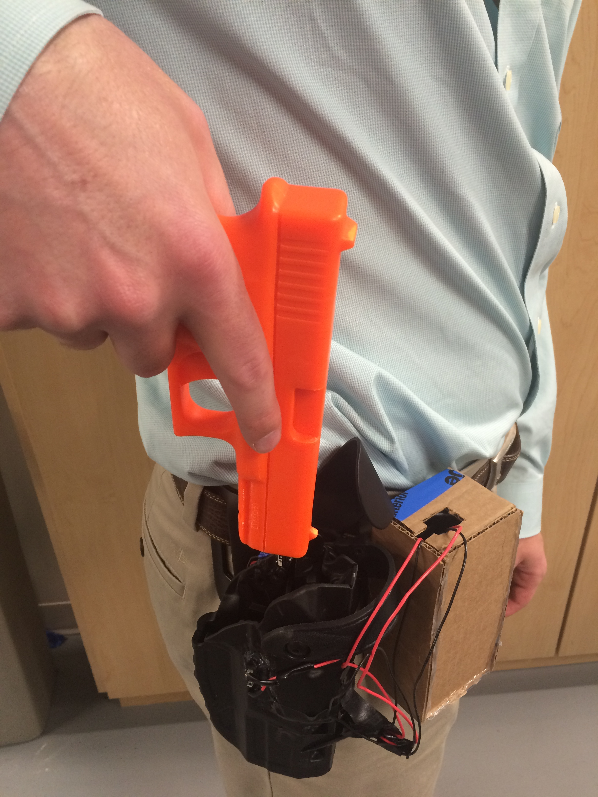
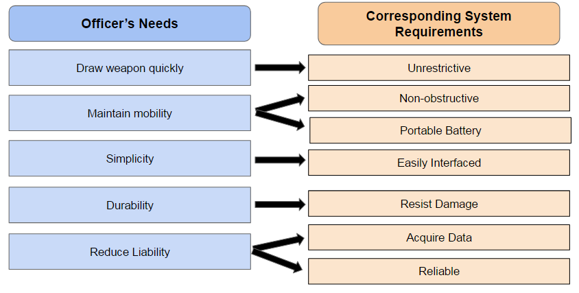

The course project for Integrated Systems Design (SYS 3048) challenged students to identify and tackle human-centered design problems, generate and assess a cross-disciplinary solution space, and iteratively develop a meaningful system prototype. Five undergraduate computer, mechanical, and systems engineers organized around a common goal: to reduce police department liability through acquisition of pertinent firearm data.
 Final prototype. Cardboard enclosure contains power source, Arduino, GPS receiver, and SD card.
Our final prototype consisted of a commercially available handgun holster comparable to those worn by officers, outfitted with several sensors and wired to a data collection and processing unit, also to be worn on an officer's belt. For safety and public consideration, all tests were conducted with a safety orange plastic replica of a handgun commonly carried by police forces.
American legal disputes frequently concern the use of police force, specifically the use of firearms. These lawsuits cost police departments hundreds of millions of dollars, and departments often opt to settle out of court, even if the accused officer is found not guilty. Furthermore, such ambiguous disputes undermine the relationship between the public and police. A carefully designed technological system could contribute objective evidence of an officer's actions in the context of their environment.
Requirements and prototypes were developed and refined by working closely with members of the University of Virginia Police Department and several officers external to the university, including patrol officers, training instructors, detectives, and individuals in other pertinent roles. In particular, an officer graciously met with the team for Q&A and provided feedback on physical prototypes.
Overview of requirements, based on the described needs of police officers.
Block diagram of Smart Holster system, including data management subsystem